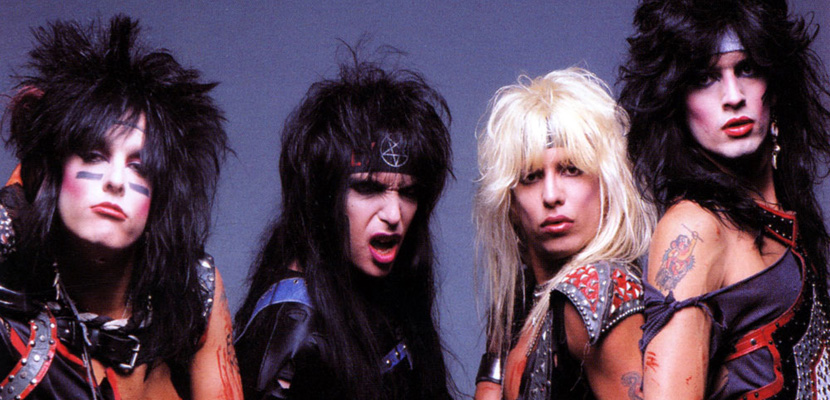

Mötley Crüe é uma banda de hard rock formada em Los Angeles em 1981. Com um estilo ousado e performances intensas, a banda se tornou um ícone do glam metal dos anos 80. Sua trajetória é marcada por grandes álbuns, turnês mundiais e uma legião de fãs.
Vocalista principal, conhecido por sua presença de palco energética.
Baixista e principal compositor, fundador da banda.
Guitarrista com estilo sombrio e riffs marcantes.
Baterista excêntrico, famoso por seus solos e acrobacias no palco.
Mötley Crüe foi influenciada por bandas como Aerosmith, Kiss, Alice Cooper e Sex Pistols, combinando o hard rock dos anos 70 com a estética punk e teatralidade.
"If you're gonna be a rock star, go be one. People don't want to see the guy next door on stage—they want to see a monster." – Nikki Sixx